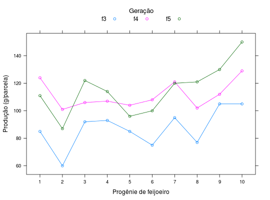

Experimento referente a avaliação de progênies provenientes do cruzamento (ESAL 501 x Rio Tibagi), obtidos em 3 gerações (F3, F4 e F5). Foi utilizado o delineamento de blocos casualizados.
Um data.frame com 30 observações e 3 variáveis, em que
proggeracprodRAMALHO et al. (2005), Tabela 13.13, pág. 251.
data(RamalhoTb13.13)#> Warning: data set ‘RamalhoTb13.13’ not foundstr(RamalhoTb13.13)#> 'data.frame': 30 obs. of 3 variables: #> $ prog : Factor w/ 10 levels "1","2","3","4",..: 1 2 3 4 5 6 7 8 9 10 ... #> $ gerac: Factor w/ 3 levels "f3","f4","f5": 1 1 1 1 1 1 1 1 1 1 ... #> $ prod : int 85 60 92 93 85 75 95 77 105 105 ...library(lattice) xyplot(prod ~ prog, groups = gerac, data = RamalhoTb13.13, type = c("p", "a"), xlab = "Progênie de feijoeiro", ylab = "Produção (g/parcela)", auto.key = list(title = "Geração", cex.title = 1.1, columns = 3))ftable(with(RamalhoTb13.13, tapply(prod, list(prog = prog, gerac = gerac), FUN = identity)))#> gerac f3 f4 f5 #> prog #> 1 85 124 111 #> 2 60 101 87 #> 3 92 106 122 #> 4 93 107 114 #> 5 85 104 96 #> 6 75 108 100 #> 7 95 121 120 #> 8 77 102 121 #> 9 105 112 130 #> 10 105 129 150